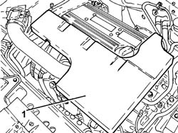
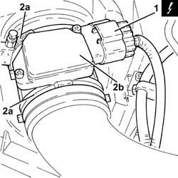
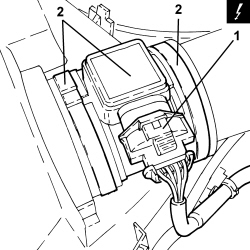

1056B10 AIR FLOW METER - R + R
- Path
- Procedures > 10 ENGINE > 1056 PETROL INJECTION SYSTEM > 1056B MULTI-POINT INJECTION SYSTEM (MPI) > 1056B10 AIR FLOW METER - R + R
- Kind
- repair procedure (removal / refitting; the operation number is the code)
- Applies to
- engines: 1.8, 2.2; all production periods
- Interactive page
- https://sloeber94.github.io/elrnDB-fCrm/en/#/194000314
Applies to: engines: 2.2; all production periods
 Removing
Removing
 Refitting
Refitting- Make sure that the ignition key is in the OFF position, then disconnect the battery terminal (-).
Description | Connector | |
|---|---|---|
- | Battery |
1. Remove the sound insulation cover fastened to the engine by three pins.

Applies to: engines: 2.2; all production periods
1. Disconnect the electrical connection from the air flow meter.
Description | Connector | |
|---|---|---|
1 | Air flow meter |

Applies to: engines: 2.2; all production periods
Refitting
Removing- Place the air flow meter back in its housing and secure it using the bands.
- Connect the electrical connection to the air flow meter.
- Place the sound insulation cover back in its housing and secure it to the engine using the three pins.
- Connect the negative battery terminal.
Applies to: engines: 1.8; all production periods
Removing
Refitting1. Disconnect the electrical connection for the air flow meter.
Description | Connector | |
|---|---|---|
1 | Air flow meter |
2. Loosen the bands and remove the air flow meter.

Applies to: engines: 1.8; all production periods
Refitting
Removing- Place the air flow meter back in its housing and secure it using the bands.
- Connect the electrical connection for the air flow meter.